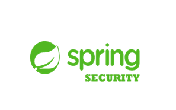
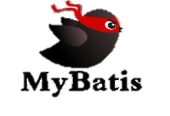

- .about me
안녕하십니까!
-
성실한 개발자가 되고 싶은 한병영이라고 합니다.
먼저 제 포트폴리오 사이트에 방문해 주셔서 감사합니다.
인터넷 없이 살 수 없는 이 한국에서 평소 웹이나 프로그램을 이용하며 발생하는
작은 불편함과 궁금증, 그것을 해결하고 싶어 개발에 대한 호기심을 가져왔던 저는
짧지만 유익했던 7개월 간의 연습과 준비 끝에 개발에 정글에 뛰어들고자 합니다.
비록 짧은 기간 준비하여 미숙한 점이 많을 수 있으나, 노력과 성장 가능성만큼은
다른 신입 개발자들과 비교해도 손색 없을 만큼 자신 있습니다 !
또한 제 강점인 성실함과 꼼꼼함으로 깔끔한 UI,UX환경을 구축함과 동시에
비 전공자만이 보여줄 수 있는 톡톡튀는 아이디어들로 Team과 함께
예쁘게 돌아가는 톱니바퀴가 되고 싶습니다.
 |
 | ||
|  |  |
프로젝트-01 : 게시판홈페이지 :springedu
 |
|
|---|
| Description |
|---|
|
프로젝트-02 : 회사 홍보 및 인트라넷 사이트 :LKH
 |
|
|---|
| Description |
|---|
|